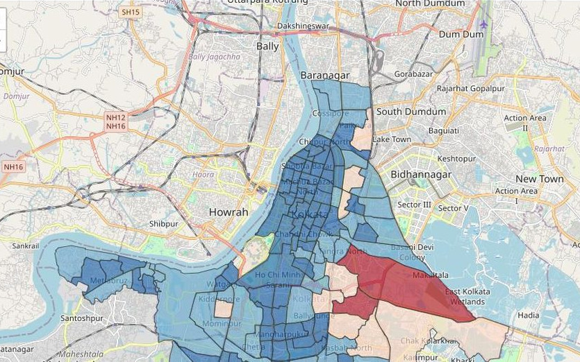
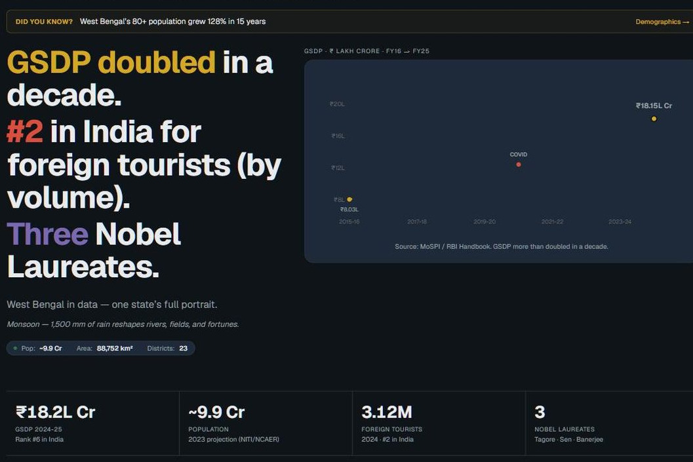
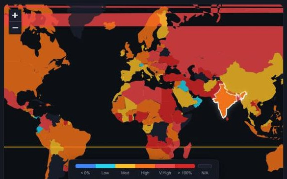
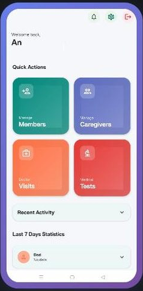

AnindyaChakraborty
Product leader by trade. Five things built end to end after hours — the data pipeline, the front end and the deployment, all of it mine.
-
I
Kolkata City Dashboard
Live
Ward-level choropleth, 141 municipal wards, shaded by population - Wards mapped141
- Domains19
- Primary sources30+
Sources arrive as APIs, CSVs and PDF-only government releases. A Python pipeline cleans them into JSON committed to the repo, and Next.js inlines it at build time — every chart pre-rendered, no runtime database. Every figure links back to where it came from.
Next.js / Python / Leaflet
Open the work → -
II
West Bengal Through Data
Live
State overview: headline findings, GSDP trend, summary figures - Districts23
- Domains19
- Open sources40+
The same method applied to a whole state, with drill-downs to district level across demographics, economy, climate, health, education and infrastructure.
Next.js / Python / Open data
Open the work → -
III
Cost of Living Tracker
Live
World choropleth, ten-year price change, with colour scale - Countries180
- Years covered25
- Spending categories5
One, five and ten-year windows on consumer prices, with local-currency and PPP-adjusted views side by side, so the currency effect is visible rather than assumed.
React / TypeScript / Leaflet
Open the work → -
IV
RemindMe
Google Play
Home screen on Android: members, caregivers, visits, tests - Languages9
- Ads0
- Paywalls0
An Android medication reminder that starts with a photograph of the prescription rather than a form. On-device OCR reads it. Extends to doctor visits, tests, refills and caregiver alerts.
Android / Kotlin / ML Kit OCR
Open the work → -
V
StockPicker
In development- Universe of NSE equities1,800
- Fundamental filters6
- Technical signals9
- Momentum signals7
- Models in the ensemble3
- Ranked output50
A six-stage screening pipeline for NSE equities. Every pick ships with the score breakdown behind it, so the ranking can be argued with rather than trusted. No public build yet.
Python / Machine learning
Fifteen years of product work before any of this — Amazon, Citi, PwC, Bandhan Bank, TCS — across payments infrastructure, open banking and marketplaces.
That domain depth is what these works run on: knowing which government release is authoritative, which figure is a projection, and which caveat has to be published rather than hidden.
- Years in product15
- Companies5
- Works live4
- In progress1